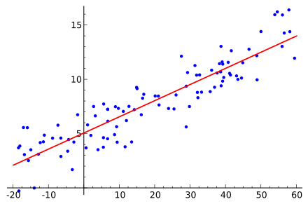
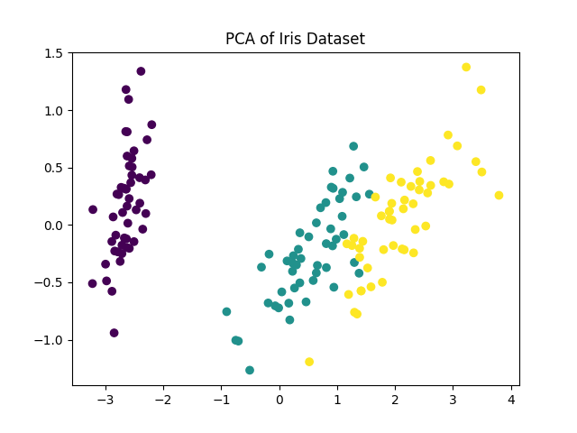

機械学習アルゴリズム
機械学習アルゴリズムは、教師あり学習、教師なし学習、強化学習などのカテゴリに分類できます。
教師あり学習アルゴリズム：
- 線形回帰（Linear Regression）：回帰タスクに使用され、連続的な数値を予測します。
- ロジスティック回帰（Logistic Regression）：二値分類タスクに使用され、カテゴリを予測します。
- サポートベクターマシン（SVM）：分類タスクに使用され、超平面を構築して分類します。
- 決定木（Decision Tree）：木構造に基づいて判断を行う分類または回帰の手法です。
教師なし学習アルゴリズム：
- K-means クラスタリング：クラスタ中心を用いてデータをグループ化します。
- 主成分分析（PCA）：次元削減に使用され、データの主成分を抽出します。
各アルゴリズムには適用可能なシナリオがあり、実際のアプリケーションでは、データの特性（ラベルの有無やデータの次元など）に基づいて、最適な機械学習アルゴリズムを選択できます。
| 分類の次元 | カテゴリ | 中核定義 | 代表的なアルゴリズム | 主な長所と短所 | 適用シナリオ |
|---|---|---|---|---|---|
| 学習方式 | 教師あり学習 | ラベル付きデータを用いて入力から出力へのマッピングを学習する | ロジスティック回帰、SVM、決定木、CNN、LSTM | 長所：予測精度が高い。短所：高品質なラベル付きデータに依存する。 | 分類、回帰、画像認識、テキスト翻訳 |
| 教師なし学習 | ラベルなしデータを使用してデータの内在的な規則性を発掘する | K-Means、PCA、DBSCAN、オートエンコーダ | 長所：ラベル付けが不要。短所：結果の解釈可能性が低い。 | データクラスタリング、次元削減、異常検知、ユーザーセグメンテーション | |
| 半教師あり学習 | 少量のラベル付きデータと大量のラベルなしデータを組み合わせて学習する | 半教師ありSVM、ラベル伝播アルゴリズム | 長所：ラベル付けコストを削減。短所：モデル設計が複雑。 | 医療画像解析、マイナー言語のNLP | |
| 強化学習 | モデルが環境との相互作用を通じて、報酬信号によって戦略を最適化する | Q-Learning、DQN、PPO | 長所：動的な意思決定に適応。短所：学習期間が長い。 | ゲームAI、ロボット制御、レコメンド戦略の最適化 | |
| タスク目標 | 分類アルゴリズム | 離散的なカテゴリラベルを予測する | ロジスティック回帰、ランダムフォレスト、CNN | 長所：分類シナリオに適している。短所：クラス不均衡に敏感。 | スパムメール検出、画像分類、疾病診断 |
| 回帰アルゴリズム | 連続的な数値出力を予測する | 線形回帰、リッジ回帰、XGBoost | 長所：連続値を出力。短所：外れ値に敏感。 | 住宅価格予測、売上予測、気温予測 | |
| クラスタリングアルゴリズム | ラベルなしで類似データをひとまとめにする | K-Means、階層的クラスタリング、DBSCAN | 長所：自動でグループ化。短所：クラスタリングの効果が距離尺度に依存。 | 市場セグメンテーション、ユーザーペルソナ、異常検知 | |
| 次元削減アルゴリズム | 特徴量の次元を減らし、中核情報を保持する | PCA、t-SNE、LDA | 長所：計算コストを削減。短所：一部の情報を失う可能性がある。 | 高次元データの可視化、特徴量の前処理 | |
| モデル構造 | 線形モデル | 入力と出力が線形関係であると仮定する | 線形回帰、ロジスティック回帰、リッジ回帰 | 長所：解釈可能性が高く、学習が速い。短所：非線形関係を適合させにくい。 | 簡単な分類回帰、ベースラインモデルの構築 |
| ツリーモデル | 決定木に基づいて構築され、非線形関係を処理する | 決定木、ランダムフォレスト、XGBoost、LightGBM | 長所：特徴量の正規化が不要。短所：木が深すぎると過学習しやすい。 | 産業レベルの分類回帰、コンペレベルのタスク | |
| ニューラルネットワークモデル | 多層ニューロン構造で、複雑な特徴量を自動抽出する | ANN、CNN、RNN、Transformer | 長所：複雑な関係に適合できる。短所：大量のデータと計算リソースが必要。 | 画像認識、NLP、音声合成 | |
| 確率モデル | 確率統計理論に基づき、確率分布を計算する | ナイーブベイズ、隠れマルコフモデル | 長所：理論的基盤がしっかりしている。短所：強い仮定に依存する。 | テキスト分類、音声認識、系列ラベリング |
教師あり学習アルゴリズム
線形回帰（Linear Regression）
線形回帰は回帰問題に使用されるアルゴリズムで、入力特徴量と目標値の間の線形関係を学習することで、連続的な出力を予測します。
適用シナリオ：住宅価格や株価などを予測します。
線形回帰の目標は、最適な線形方程式を見つけることです：
- y は予測値（目標値）です。
- x1，x2，xnは入力特徴量です。
- w1，w2，wnは学習対象の重み（モデルパラメータ）です。
- b はバイアス項です。

次に、sklearn を使用して簡単な住宅価格予測を行います：
例
from sklearn.model_selection import train_test_split
import pandas as pd
# 簡単な住宅価格データセットがあると仮定します
data = {
'面積': [50, 60, 80, 100, 120],
'住宅価格': [150, 180, 240, 300, 350]
}
df = pd.DataFrame(data)
# 特徴量とラベル
X = df[['面積']]
y = df['住宅価格']
# データ分割
X_train, X_test, y_train, y_test = train_test_split(X, y, test_size=0.2, random_state=42)
# 線形回帰モデルを学習する
model = LinearRegression()
model.fit(X_train, y_train)
# 予測
y_pred = model.predict(X_test)
print(f"予測した住宅価格: {y_pred}")
出力結果は次のとおりです：
预测的房价: [180.8411215]
ロジスティック回帰（Logistic Regression）
ロジスティック回帰は分類問題に使用されるアルゴリズムで、名前に「回帰」が含まれていますが、二値分類問題を扱うためのものです。
ロジスティック回帰は、入力特徴量とカテゴリ間の関係を学習することで、カテゴリラベルを予測します。
適用シナリオ：スパムメール分類、疾病診断（病気であるかどうか）。
ロジスティック回帰の出力は確率値であり、サンプルが特定のカテゴリに属する確率を表します。
通常はシグモイド関数を使用します：
ロジスティック回帰を使用して二値分類タスクを実行します：
例
from sklearn.datasets import load_iris
from sklearn.model_selection import train_test_split
from sklearn.metrics import accuracy_score
# アイリスデータセットを読み込む
iris = load_iris()
X = iris.data
y = iris.target
# 最初の2クラスだけを使用して二値分類タスクを行う
X = X[y != 2]
y = y[y != 2]
# データ分割
X_train, X_test, y_train, y_test = train_test_split(X, y, test_size=0.2, random_state=42)
# ロジスティック回帰モデルを学習する
model = LogisticRegression()
model.fit(X_train, y_train)
# 予測
y_pred = model.predict(X_test)
# モデルを評価する
print(f"分類精度: {accuracy_score(y_test, y_pred):.2f}")
出力結果は次のとおりです：
分类准确率: 1.00
サポートベクターマシン（SVM）
サポートベクターマシンは一般的な分類アルゴリズムで、超平面を構築してクラス間のマージン（Margin）を最大化し、分類誤差を最小限に抑えます。
適用シナリオ：テキスト分類、顔認識など。
SVM を使用してアイリスの分類タスクを実行します：
例
from sklearn.datasets import load_iris
from sklearn.model_selection import train_test_split
from sklearn.metrics import accuracy_score
# アイリスデータセットを読み込む
iris = load_iris()
X = iris.data
y = iris.target
# データ分割
X_train, X_test, y_train, y_test = train_test_split(X, y, test_size=0.3, random_state=42)
# SVM モデルを学習する
model = SVC(kernel='linear')
model.fit(X_train, y_train)
# 予測
y_pred = model.predict(X_test)
# モデルを評価する
print(f"SVM 分類精度: {accuracy_score(y_test, y_pred):.2f}")
出力結果は次のとおりです：
SVM 分类准确率: 1.00
決定木（Decision Tree）
決定木は、木構造に基づいて判断を行う分類および回帰の手法です。一連の「判断条件」を通じて、サンプルがどのカテゴリに属するかを決定します。
適用シナリオ：顧客分類、信用スコアリングなど。
決定木を使用して分類タスクを実行します：
例
from sklearn.datasets import load_iris
from sklearn.model_selection import train_test_split
from sklearn.metrics import accuracy_score
# アイリスデータセットを読み込む
iris = load_iris()
X = iris.data
y = iris.target
# データ分割
X_train, X_test, y_train, y_test = train_test_split(X, y, test_size=0.3, random_state=42)
# 決定木モデルを学習する
model = DecisionTreeClassifier(random_state=42)
model.fit(X_train, y_train)
# 予測
y_pred = model.predict(X_test)
# モデルの評価
print(f"決定木分類の精度: {accuracy_score(y_test, y_pred):.2f}")
出力結果は次のとおりです：
决策树分类准确率: 1.00
教師なし学習アルゴリズム
K-means クラスタリング（K-means Clustering）
K-means は中心点ベースのクラスタリングアルゴリズムであり、クラスタの中心点を継続的に調整することで、各クラスタ内のデータポイントを可能な限りクラスタ中心に近づけます。
適用シナリオ：顧客セグメンテーション、市場分析、画像圧縮。
K-means を使用した顧客セグメンテーション：
例
from sklearn.datasets import make_blobs
import matplotlib.pyplot as plt
# シンプルな2次元データセットを生成する
X, _ = make_blobs(n_samples=300, centers=4, cluster_std=0.60, random_state=0)
# K-means モデルをトレーニングする
model = KMeans(n_clusters=4)
model.fit(X)
# クラスタリング結果を予測する
y_kmeans = model.predict(X)
# クラスタリング結果を可視化する
plt.scatter(X[:, 0], X[:, 1], c=y_kmeans, s=50, cmap='viridis')
plt.show()
出力された図は次のとおりです：

主成分分析（PCA）
PCA は次元削減技術であり、線形変換によってデータを新しい座標系に変換し、分散の大部分を最初のいくつかの主成分に集中させます。
適用シナリオ：画像の次元削減、特徴選択、データ可視化。
PCA を使用した高次元データの次元削減と可視化：
例
from sklearn.datasets import load_iris
import matplotlib.pyplot as plt
# アヤメのデータセットを読み込む
iris = load_iris()
X = iris.data
y = iris.target
# 2次元に削減する
pca = PCA(n_components=2)
X_pca = pca.fit_transform(X)
# 結果を可視化する
plt.scatter(X_pca[:, 0], X_pca[:, 1], c=y, cmap='viridis')
plt.title('PCA of Iris Dataset')
plt.show()
出力された図は次のとおりです：

機械学習アルゴリズム
| 中国語の正式名称 | 英語の正式名称 | 略称 | 主な適用シナリオ |
|---|---|---|---|
| 伝統的機械学習アルゴリズム | |||
| 決定木 | Decision Tree | DT | 分類、回帰、特徴量重要度分析 |
| ランダムフォレスト | Random Forest | RF | 分類、回帰、異常検出、特徴量選択 |
| ロジスティック回帰 | Logistic Regression | LR | 二値分類タスク、確率予測、信用スコアリング |
| サポートベクターマシン | Support Vector Machine | SVM | 分類、高次元小サンプルデータ、テキスト分類 |
| ナイーブベイズ | Naive Bayes | NB | テキスト分類、スパムメール識別、感情分析 |
| 勾配ブースティングツリー | Gradient Boosting Decision Tree | GBDT | 分類、回帰、ランキングタスク |
| 極端勾配ブースティング | Extreme Gradient Boosting | XGBoost | 高精度の分類回帰、コンペティションレベルのタスク、クリック率予測 |
| 軽量勾配ブースティングマシン | Light Gradient Boosting Machine | LightGBM | 大規模データの分類回帰、リアルタイム予測、レコメンドシステム |
| K近傍法 | K-Nearest Neighbor | KNN | シンプルな分類回帰、レコメンドシステム、異常検出 |
| K平均法クラスタリング | K-Means Clustering | K-Means | データクラスタリング、ユーザーセグメンテーション、画像分割 |
| 主成分分析 | Principal Component Analysis | PCA | データの次元削減、高次元データの可視化、特徴量のノイズ除去 |
| 深層学習アルゴリズム | |||
| 人工ニューラルネットワーク | Artificial Neural Network | ANN | シンプルな分類回帰、ベースラインモデルの検証 |
| 畳み込みニューラルネットワーク | Convolutional Neural Network | CNN | 画像認識、物体検出、動画分析、医用画像診断 |
| リカレントニューラルネットワーク | Recurrent Neural Network | RNN | シーケンスデータ処理、テキスト生成、音声認識 |
| 長短期記憶ネットワーク | Long Short-Term Memory | LSTM | 長いシーケンスのテキスト翻訳、音声合成、時系列予測 |
| ゲート付きリカレントユニット | Gated Recurrent Unit | GRU | シーケンス分類、感情分析、対話システム |
| 生成的敵対ネットワーク | Generative Adversarial Network | GAN | 画像生成、スタイル変換、データ拡張、超解像再構成 |
| トランスフォーマー | Transformer | Transformer | 自然言語翻訳、テキスト要約、マルチモーダルタスク、大規模モデルの基盤アーキテクチャ |
| オートエンコーダー | Autoencoder | AE | データ圧縮、異常検出、特徴抽出 |
| 変分オートエンコーダー | Variational Autoencoder | VAE | 生成的タスク、データノイズ除去、画像生成 |
| グラフニューラルネットワーク | Graph Neural Network | GNN | ソーシャルネットワーク分析、分子構造予測、知識グラフ推論 |